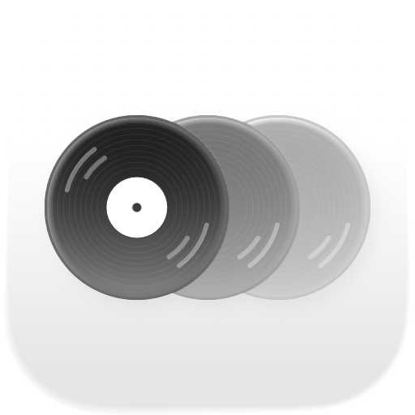

1日1曲、その日の音楽を記録するアプリです。V-Diary の姉妹アプリです。
Q. Apple Music の契約は必要ですか？いいえ。曲の検索と約30秒の試聴は契約なしで使えます。曲を最後まで聴くには Apple Music アプリで開いてください。
Q. 曲が検索できません。iPhoneの「設定」→「Our Music」で「メディアと Apple Music」へのアクセスが許可されているか確認してください。
GitHub Issues ／ プライバシーポリシー